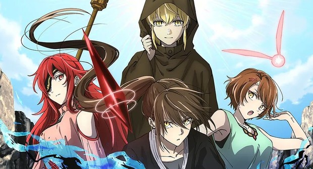
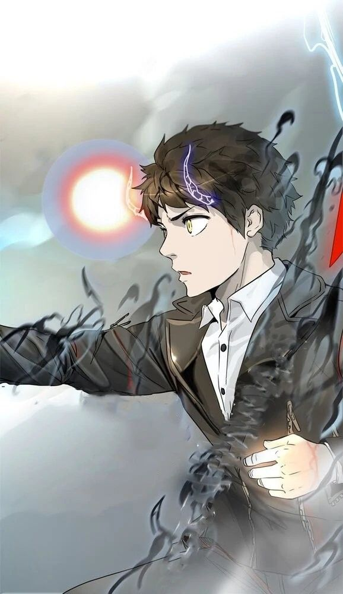
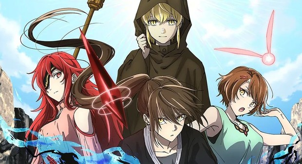
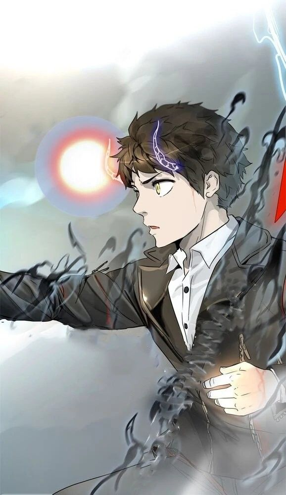

Book 2: Tower of God
"Overcome all kinds of trials to climb the tower, the tower that has everything you could ever want!"
The Crown Game starts now.
Gallery
 



Synopsis
Twenty-Fifth Bam must journey skyward in a mysterious tower if he has any chance of reuniting with his best friend Rachel, even if that means facing his own death. Using his strength, skill and wits, Bam climbs higher and higher up the Tower despite the dangers. Bam makes both allies and enemies on his quest to find Rachel; however her intentions of reconnecting with him become unclear as new revelations about their friendship reveal a much deeper, darker secret.
In this second book of the series, Bam continues his journey up the mysterious Tower. After passing through the Shinsu barrier, he is confronted with more unexpected and deadly challenges. Bam will need to rely on his strange new allies to pass a deceptively simple exam where the stakes are life or death.
Chapters Covered
Yu Han Sung's Examination
- Ch.11: 2F - Yu Han Sung's Examination (1) | (p. 5-26)
- Ch.12: 2F - Yu Han Sung's Examination (2) | (p. 27-52)
- Ch.13: 2F - Yu Han Sung's Examination (3) | (p. 53-76)
Summary
As Lero-Ro contemplates the cruelty of ‘God’ and leaves the aggressive Regular curled up on the ground, he returns to Baam as Leesoo and Serena Rinnen force their way through the barrier.
Their next examination is conducted team by team. While Baam’s team is waiting, his hopes that the blue ceiling is a sky is dashed by Khun. They are interrupted by the screams of another team. They are the fifth team to go and, before they go in, they are given a clue by Neonbag: that they have to finish the test within 5 minutes. As they enter the room, they are greeted by Yu Han Sung.
Khun has a flashback to when he was in the Khun Family, illustrating Khun's upbringing and his intense distrust towards anything. Back in the present, Yu Han Sung explains the rules for success and gives them no more clues, to the aggravation of Baam’s team. He uses the full force of his intellect and tries to think his way out of this test, but as he is thinking, Rak just opens a door. To Khun's outrage, the goal of the test was to open any door. Because of his mistrust, he needed allies that could trust and take leaps of faith without any concrete proof.
The other teams all passed due to strange reasons. Leesoo was the only one who correctly used the clue given to him by Neonbag and deduced what was supposed to be done. One team relied on blind and false faith and Laure picked one randomly due to his laziness.
Crown Game
- Ch.14: 2F - Crown Game (1) | (p. 77-102)
- Ch.15: 2F - Crown Game (2) | (p. 103-134)
- Ch.16: 2F - Crown Game (3) | (p. 135-166)
- Ch.17: 2F - Crown Game (4) | (p. 167-188)
- Ch.18: 2F - Crown Game (5) | (p. 189-210)
- Ch.19: 2F - Crown Game (6) | (p. 211-230)
- Ch.20: 2F - Crown Game (7) | (p. 231-248)
- Ch.21: 2F - Crown Game (8) | (p. 249-266)
Summary
Quant tells Yu Han Sung that only three people passed the deathmatch test because he didn’t check and there was one of Zahard's Princesses and an Irregular in the mix. Aware of Evankhell’s strict reputation, Yu Han Sung quickly comes up with a plan to salvage Quant’s mess.
Meanwhile, Baam is having a small conversation with Leesoo when Lero-Ro comes and announces that an optional bonus game is available, with the prize being immediate advance to the next floor. In the arena, he explains the rules for the Crown Game.
Hatsu's team and Shopin's team participate in round one of the game. Shopin's team is easily beaten by Anak alone after which she steals the crown. Hatsu's team, First Emperor's team and Laure's team participate in round two. Anak takes the crown while Hatsu fights First Emperor's team and Leesoo fights with Serena Rinnen and Ho. Hatsu easily defeats First Emperor's team and moves on to help Leesoo.
The defeat of First Emperor's team triggers Laure's plan. He wakes up from where he appeared to be sleeping and starts blasting shinsu at Anak while his teammates move in on her trying to take the crown. His shinsu attack fails to harm Anak. She becomes angry, ignites her weapon, and uses it to attack Laure.
Laure dodges her attacks but she suddenly stops when she senses Baam's weapon, the Black March, resonating with hers. Laure notices her change in behaviour, but before he can make anything from it, his team forces him to forfeit the game. Anak jumps off the throne, causing her team to lose, and breaks into Baam's room demanding that he gives her the Black March.
A long discussion ensues ending in Baam's refusal to give up the weapon. She is about to attack him when Lero-Ro interferes. He tells her that she is disqualified (because she jumped off the throne), that she should get back in her room and that he won’t forgive any further misbehaviour. She starts to leave, but then instead asks Lero-Ro if he could change the rules as she wants to make a wager. If Baam wins, he gets both the Green April and the Black March, but if he loses she gets both the weapons. Lero-Ro says it sounds like fun. She explains the bet to Baam and asks him if he accepts it. Baam refuses again. She then threatens to come after him when the game is over. Baam is reluctant to get his friends involved, but Khun ends up accepting the bet in Baam's place.
Lero-Ro agrees to add a new rule. The rule state that Baam and his teammates will participate in all the remaining rounds starting with the third round. If he succeeds in those rounds, he gets the Green April. If he fails, he loses the Black March. The new rule doesn't alter any existing rules.
On the way pack to their room Hatsu's team passes Rachel's Team. Androssi says something to Anak which provokes Anak. Anak is about to attack, but Hatsu stops her. She continues, walking off in disdain.
Khun's team has a long conversation with each other which includes one of Baam's flash back. In the flashback Rachel tells him that he must not betray people especially girls and if he does, the world's ceiling will fall in.
Rozéal's team, Levin's team, Khun's team and Aleksai's team participate in round three of the game. At the start of the game Rozéal, Levin and Chungchung strategize that this round is all about speed. All three of these people feel they have the advantage when it comes to speed, but are quickly proven wrong by Khun. Moving incredibly fast, Khun takes the crown.
With the crown in his hand, Khun taunts the other teams by telling them he could win the round immediately but it wouldn’t be fun and challenges them to take the crown instead.
They all move to attack him, but before they can get to him he throws the crown into their midst for them to fight over. While everyone else is attacking Chungchung moves in to try and steal the crown while no-one is looking.
The various Regulars go and attack Khun's team, but using Khun's Manbarondenna and Rak's skill with his spear, Rak and Khun are able to fend off the Regulars while protecting Baam at the same time.
The remaining enemies (Levin, Rozéal, and Leon 3) try and rush them by attacking at the same time. All of their attacks are stopped mysteriously (maybe because of something done by Baam or by the Black March). Afterward, Khun and Rak quickly take out the remaining attackers.
Chungchung meanwhile has been trying to sneak to the throne with the crown. Khun is aware of this fact and mocks Chungchung by reveals to her that the crown she has is a fake replica made by Manbarondenna. Chungchung feels outraged that her entire effort has been futile.
Khun's team, Blarouse's team, Hoshi's team and Red Hair's team participate in round four of the game. Red Hair's team and Hoshi's team decided to gang up on Khun's team, but both teams are quickly defeated in a surprise attack by Khun's other team. It is revealed that Blarouse's team made a deal with Khun during the first test on the Second Floor. The deal was that Khun would help the other team through their tests by carrying them in his bag in exchange for them helping him pass his tests. He signaled that he wanted their help by removing his bandanna in the third round. After defeating Khun's enemies, Khun's other team forfeited the game making way for Khun's team to pass.
Khun's team, Rachel's team, Hwa Ryun's team, Dhadi's team and Azadni's team participated in round five of the game. At the start of the round Hwa Ryun annihilates Dahdi's team and Azadni's team. She then turns her sights on Khun's team. Rak and Khun move in intercept her but she jumps over them landing on the throne next to Baam. Khun and Rak try to go help Baam but they are intercepted by Hwa Ryun's teammates Yung Changsoo and Goon. She moves to strike him but is blocked by Androssi. Baam starts to defend himself but one of Androssi's teammates reassures Baam that this wasn't their goal and Baam realized it is Rachel underneath the hood.
Hwa Ryun and Androssi fight with each other while Yung Changsoo and Goon fight with Rak and Khun. Rak and Khun win their fights and Khun feels that they pretty much have the Game in the bag since Rachel's team isn't playing to win, but Androssi trips because of her impractical shoes and Hwa Ryun gets by her. Hwa Ryun moves to attack Rachel. Baam protects her with his body, sustaining a head injury whilst using shinsu to attack Hwa Ryun's eye. Baam is badly injured and his team is disqualified because he lost contact with the throne. The only team left in the game is Rachel's team and they choose not to steal the crown. Thus the Crown Game ends with no winners.
Meanwhile, Yuri and her friends are making their way down to Evankhell's Hell and Kurudan unwittingly claims that if there was anyone who could move freely in a Steel Eel breeding ground, he would give his wing tree to him. They leave with Evan thinking that Baam was really dangerous.